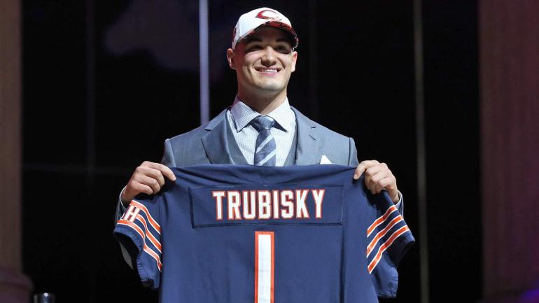

Mitchell Trubisky is the Future
Welcome to the Fan Page of Trubearsky
Mitch Quote of the Day
"Who wants to get tackled? Who wants to get sacked? Not me."
Will the Bears win more football games than the Cubs win in the playoffs?
PROBABLY...
The Man, The Myth, The Legend
I have never seen a more beautiful man in the world. His ability to roll out
and make beautiful plays is like none other. I see him as a combination
between Aaron Rodgers, Joe Namath, and Marshawn Lynch.

Mitch's Greatest Attributes
- His smile.
- His wits.
- His guns.
- His ability to roll out.
- His lovely family.
I have never been so excited to see another man in tight pants in my entire life.
Bears 2017-18 Schedule and Scores
Week 1: Atlanta Falcons-L 17-23 (Mike Glennon)
Week 2: @Tampa Bay Buccaneers-L 7-29 (Mike Glennon)
Week 3: Pittsburgh Steelers-W 23-17(OT) (Mike Glennon)
Week 4: @Green Bay Packers-L 14-35 (Mike Glennon)
Week 5: Minnesota Vikings-L 17-20 (Mitchell Trubisky)
Week 6: @Baltimore Ravens-W 27-24(OT) (Mitchell Trubisky)
Week 7: Carolina Panthers
Week 8: Bye
Week 9: @New Orleans Saints
Week 10: Green Bay Packers
Week 11: Detroit Lions
Week 12: @Philadelphia Eagles
Week 13: San Francisco 49ers
Week 14: @Cincinatti Bengals
Week 15: @Detroit Lions
Week 16: Cleveland Browns
Week 17: @Minnesota Vikings
Here are his statistics through 2 NFL Starts:
| Opponent |
Score |
TD |
Passing Yards |
Rushing Yards |
Completion Rate |
Interceptions |
Fumbles |
Yards per Pass |
QBR |
Rating |
Sacks-Yards |
| Minnesota Vikings |
17-20 |
1 |
128 |
22 |
12/25 |
1 |
1 |
5.1 |
11.0 |
60.1 |
1-7 |
| Baltimore Ravens |
27-24 |
1 |
113 |
32 |
8/16 |
0 |
1 |
7.1 |
30.3 |
94.0 |
4-23 |